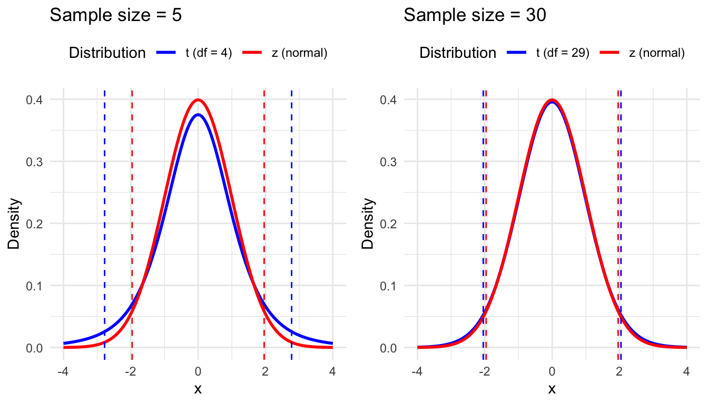
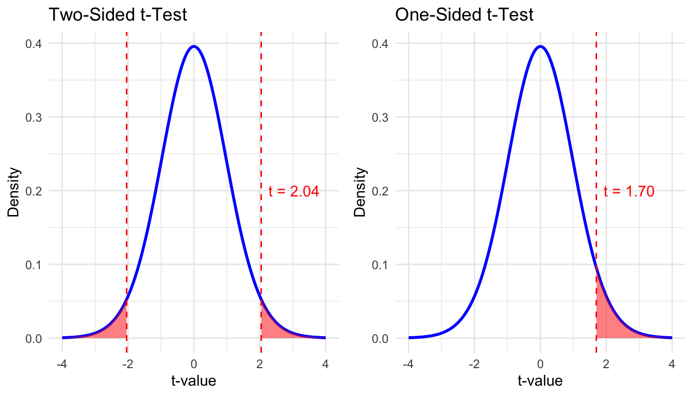

t-test
What is a t-test?
A t-test is a statistical test used to determine if there is a significant difference between two means. It is comparable to the z-test, but is more appropriate when population standard deviation is unknown, and has to be estimated from the sample. Where the z-test is based on the z-distribution (i.e. the normal distribution), the t-test is based on the t-distribution, which takes into account the uncertainty in the estimate of the standard deviation. If the sample size is small, the t-distribution has heavier tails than the z-distribution, which makes it less likely to make a Type I error (i.e., rejecting the null hypothesis when it is true).
In the following plot we show the normal (z) and t-distributions for two different sample sizes: 5 and 30. The dotted lines represent the critical values for a \(95%\) confidence interval (CI). You see that in the left plot, with a sample size of 5, the t-distribution (blue) has heavier tails than the normal distribution, and so the confidence interval is wider. As the sample size increases, the t-distribution approaches the normal distribution, and the critical values converge.
In practice, the t-test is generally preferred when the population standard deviation is unknown (even if the sample size is large). There are three main types of t-tests: the one-sample t-test, the independent samples t-test, and the paired samples t-test.1
One-sample t-test
- Purpose. Compare the mean of a single sample to a known value (e.g., a population mean).
- Example. You have a sample of students and you want to test if the average time they spend on social media is significantly different from the national average (which we would then need to know in advance).
Independent samples t-test
- Purpose. Compare the means between two independent groups.
- Example. You conducted an experiment where you randomly assign participants to play either a violent or non-violent video game, and you want to test if the hearth rate in the violent group is significantly higher than in the non-violent group after playing the game.
Paired samples t-test
- Purpose. Compare the means within subjects (e.g., within a person) at two different time points or under two different conditions. In this case the samples are not independent, because the two observations are paired.
- Example. You measured the hearth rate of the same participants before and after playing a video game, and you want to test if there is a significant increase.
How to use
The t-test is included in base R, but we’ll also need the car package for the Levene’s test (as you’ll see later).
library(car)For the examples we’ll use our practice dataset. We’ll use the following variables:
- news_consumption. A continuous variable measuring the number of hours per week that a person spends consuming news.
- np_subscription. A binary variable indicating whether the person has a subscription to a national newspaper (1 = yes, 0 = no).
- experiment_group. A categorical variable indicating the group to which the participant was assigned in an experiment. Each group viewed a different movie that was either neutral, positive, or negative about journalism.
- trust_t1 & trust_t2. Two continuous variables measuring a participant’s trust in journalism before and after the experiment.
library(tidyverse)
d <- read_csv("https://tinyurl.com/R-practice-data") |>
select(news_consumption = `news consumption`,
np_subscription,
experiment_group,
trust_t1,
trust_t2)
dOne-sample t-test
The one-sample t-test is used to compare the mean of a single sample to a known value (e.g., a population mean). In this example, we’ll test if the average number of hours per week that people spend consuming news is significantly different from 14 hours (there is no particular reason for this value, it’s just an example).
First, let’s look at the mean and standard deviation of news_consumption.
d |>
summarise(M = mean(news_consumption),
SD = sd(news_consumption))This shows that the mean number of hours spent consuming news per week is higher than 10. With the one-sample t-test we can test if this difference is statistically significant. The formula for the one-sample t-test is dependent_variable ~ 1, where 1 indicates that there is no grouping variable (this will make sense when you see the formula for the independent samples t-test).
t.test(news_consumption ~ 1, mu = 14, data=d)
One Sample t-test
data: news_consumption
t = 1.7229, df = 599, p-value = 0.08543
alternative hypothesis: true mean is not equal to 14
95 percent confidence interval:
13.96409 14.54925
sample estimates:
mean of x
14.25667 The results show that the mean number of hours spent consuming news (\(M = 14.26, SD = 3.65\)) is not significantly different from 14 hours, \(t(599) = 1.72, p = 0.085\). So even though the mean is higher than 14 hours, based on our data we cannot conclude that this difference is statistically significant.
Independent samples t-test
The independent samples t-test is used to compare the means between two independent groups. Here we compare news_consumption between people who have a subscription to a newspaper and those who don’t (np_subscription).
Let’s first look at the means and standard deviations for each group.
d |>
group_by(np_subscription) %>%
summarise(M = mean(news_consumption),
SD = sd(news_consumption))This shows that the mean number of hours spent consuming news is higher for people with a subscription than for those without. With the independent samples t-test we can test if this difference is statistically significant.
However, we need to check one thing first! For the independent samples t-test, we need to indicate whether the variances between the two groups are equal. From the standard deviations we already know that they are not identical. To test this formally, we can use Levene’s test. The formula for Levene’s test is dependent_variable ~ grouping_variable.
leveneTest(news_consumption ~ np_subscription, data = d)The Levene’s test is significant (p < 0.001), which means that the variances are not equal. Now, we can perform the independent samples t-test with the argument var.equal = FALSE.2 The formula for the independent samples t-test is dependent_variable ~ grouping_variable.
t.test(news_consumption ~ np_subscription, data = d, var.equal = FALSE)
Welch Two Sample t-test
data: news_consumption by np_subscription
t = -22.93, df = 388.95, p-value < 2.2e-16
alternative hypothesis: true difference in means between group no and group yes is not equal to 0
95 percent confidence interval:
-5.641215 -4.750228
sample estimates:
mean in group no mean in group yes
11.33840 16.53412 The results show that the mean number of hours spent consuming news is significantly different between people with ( \(M_1 = 16.53, SD = 1.85\)) and without (\(M_0 = 11.34, SD = 3.29\)) a subscription to a national newspaper, \(t(388.95) = -22.93, p < 0.001\).
Paired samples t-test
The paired samples t-test is used to compare the means within subjects at two different time points or under two different conditions. In this example, we’ll test if the trust in journalism (trust_t1 and trust_t2) significantly changed after the experiment. We focusing on the group that watched the positive movie, to see if this had a positive effect on trust.3:
d_positive <- filter(d, experiment_group == "positive")First, let’s look at the means and standard deviations for each time point.
d_positive |>
summarise(M1 = mean(trust_t1),
SD1 = sd(trust_t1),
M2 = mean(trust_t2),
SD2 = sd(trust_t2))Now, let’s perform the paired samples t-test. Notice that this time we don’t have a grouping variable, like np_subscription above. Instead, our observations are paired within the same row (i.e. participant), so we need to specify the two variables that we want to compare. The formula for this is Pair(t1, t2) ~ 1. We use the argument paired = TRUE to indicate that the observations are paired.
t.test(Pair(trust_t1, trust_t2) ~ 1, data = d_positive)
Paired t-test
data: Pair(trust_t1, trust_t2)
t = -17.724, df = 199, p-value < 2.2e-16
alternative hypothesis: true mean difference is not equal to 0
95 percent confidence interval:
-1.559961 -1.247592
sample estimates:
mean difference
-1.403776 The results show that the trust in journalism significantly increased4 after watching the positive movie, \(t(199.00) = -17.72, p < 0.001\).
Two-sided vs one-sided t-test
By default, the t-test is two-sided, which means that we don’t care about the direction of difference between the means. Our one-sample t-test tested whether the mean was less OR greater than 10 hours. Our independent samples t-test tested whether the first mean was less OR greater than the second mean. And our paired samples t-test tested whether the difference between the two means (trust_t1 - trust_t2) was less OR greater than zero.
If you have a specific hypothesis about the direction of the difference, you can also perform a one-sided t-test. By doing so, you increase the power of the test, because you only need to reject the null hypothesis in one direction. The following figures show how a one-sided t-test puts all the probability in one tail of the distribution, which means that with the same level of significance (e.g., \(\alpha = 0.05\)), you can reject the null hypothesis with a smaller t-value.

Word of caution
Using a one-sided test is only valid if you have a strong, justifiable reason to expect that the difference will be in a specific direction. This expectation should be grounded in theory, and formulated a priori, before you look at the data.
Using a one-sided test after examining the data, or simply to achieve statistical significance, is a serious violation of research ethics. It artificially inflates the chances of rejecting the null hypothesis by ignoring potential effects in the other direction. This increases the risk of Type I error (a false positive) and can lead to misleading or exaggerated conclusions. In most cases, the more conservative two-sided test is recommended.
How to use a one-sided t-test
To perform a one-sided t-test, you need to specify the alternative hypothesis in the alternative argument in the t.test() function. The following code shows how to perform the same one-sample t-test as above, but this time as a one-sided test. We’ll test if the mean number of hours spent consuming news is significantly greater than 14 hours.
t.test(news_consumption ~ 1, mu = 14, data = d, alternative = "greater")
One Sample t-test
data: news_consumption
t = 1.7229, df = 599, p-value = 0.04271
alternative hypothesis: true mean is greater than 14
95 percent confidence interval:
14.01124 Inf
sample estimates:
mean of x
14.25667 When we tested this with a two-sided test, we found that the mean number of hours spent consuming news was not significantly different from 14 hours based on a \(95%\) confidence level. But with a one-sided test, we find that the mean number of hours spent consuming news is significantly greater than 14 hours. Also note that the confidence interval is now one-sided, which you can see by the upper bound being Inf (infite). Note that in this case the use of a one-sided test is clearly not justified (see the word of caution above). This is purely to demonstrate how using a one-sided test affects the p-value.
Similarly, we could test whether the mean number of hours spent consuming news is significantly less than 14 hours by setting alternative = "less". We’ll skip the output here, but you can run it yourself to verify that this test is not significant.
t.test(news_consumption ~ 1, mu = 14, data = d, alternative = "less")
One Sample t-test
data: news_consumption
t = 1.7229, df = 599, p-value = 0.9573
alternative hypothesis: true mean is less than 14
95 percent confidence interval:
-Inf 14.50209
sample estimates:
mean of x
14.25667 one-sided test in independent and paired samples t-test
In the independent samples t-test and paired samples t-test you can specify the alternative hypothesis in the same way as in the one-sample t-test.
- In the independent samples t-test, you can test if the mean of the first group is significantly greater or less than the mean of the second group.
- In the paired samples t-test, you can test if the mean difference is significantly greater or less than zero. Be carefull (!!) that this difference is calculated as
trust_t1 - trust_t2, so a positive difference means that thetrust_t1is greater thantrust_t2. In other words, if you testalternative = "greater", you are testing if trust decreased.
Footnotes
You may also encounter the t-distribution in other contexts, such as for testing the significance of individual coefficients in a regression model (i.e. is the coefficient significantly different from zero?). In this tutorial we focus on the t-test as a standalone statistical test, but the t-distribution has many other uses in statistics.↩︎
If the variances are equal, you set
var.equal = TRUE.↩︎We focus on one group, because we expect trust to change in different directions depending on the movie (e.g., increase after watching a positive movie, decrease after watching a negative movie). Note that in reality, when you have both repeated measures and multiple groups, you might want to use a mixed design ANOVA instead.↩︎
We know that it increased from the means that we calculated above. What might be confusing is that the t-test reports a negative value for the mean difference. This is because the t-test is based on the difference between the two means, and the difference is calculated as
trust_t1 - trust_t2.↩︎